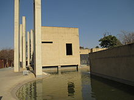
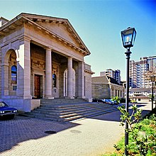

Culture Hub
Johannesburg is a cultural hub in South Africa and has a wide variety of cultural venues, making it a prominent area for many creative and cultural industries
National School of Arts
Johannesburg is home to the National School of Arts, The University of Witwatersrand's School of the Arts and the South African Ballet Theatre,as well as the Johannesburg Art Gallery and other prominent cultural landmarks, such as the Mary Fitzgerald Square and numerous other museums, theatres, galleries and libraries.
The Johannesburg City Library is located in the Central Business District of Johannesburg.
Museum and Galleries
Specialist museums cover subjects such as Africana, costume, design, fossils, geology, military history, medical, pharmacy, photography and transportation networks such as railways. Gold Reef City, a living museum, was originally part of the Crown Mines Complex, where gold was mined to a depth of 3,000 metres (9,800 ft). The Market Theatre stages plays, comedy shows, and musical performances.
-
AECI Dynamite Factory Museum
The AECI Dynamite Factory Museum, housed in the 1895 residence of a mining official, records the history of explosives, with particular emphasis on their use in the mining industry.
-
Adler Museum of Medicine
History of Medicine, brainchild of Dr Cyril Adler, was formally inaugurated 1962. The museum's role was to collect and preserve for posterity all material that would illustrate the history of medicine in general and of South Africa in particular.
 -
Madiba Freedom Museum
Named after the former President Mandela's clan, the museum's theme is Mzabalazo and charts South Africa's journey to democracy.
-
Zoology Museum
The Zoology Museum is the only natural history museum in Johannesburg which is unusual because all the other major cities in South Africa have large public natural history museums. It has retained a unique character as the display specimens are exhibited in finely crafted teak cabinets which allow the viewer to engage directly with scores of objects at close range.
Entertainment and Performing Arts
Johannesburg hosts many of South Africa's premier music lawgovernment, such as RAMFest's Johannesburg leg, In The City and many international tours from bands and artists around the world. Several critically acclaimed musical acts come from Johannesburg, such as Kongos, Johnny Clegg, Zebra & Giraffe, Man As Machine, The Parlotones, and ShortStraw.
The Joburg Theatre complex hosts drama, opera and ballet.
The Market Theatre Foundation houses the historic Market Theatre in Newtown with various sized stages holding performances from theatre to music and dance. The foundation also oversees the Market Theatre Laboratory and The Market Photo Workshop - run training programmes for young creatives and presenting work to the public.